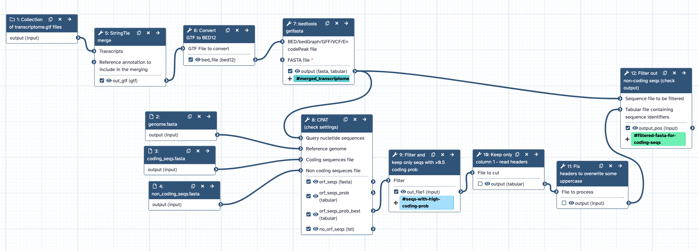

This is part of a series of workflows to annotate a genome, tagged with `TSI-annotation`. These workflows are based on command-line code by Luke Silver, converted into Galaxy Australia workflows. The workflows can be run in this order: * Repeat masking * RNAseq QC and read trimming * Find transcripts * Combine transcripts * Extract transcripts * Convert formats * Fgenesh annotation **** About this workflow: * Inputs: multiple transcriptome.gtfs from different tissues, genome.fasta, coding_seqs.fasta, non_coding_seqs.fasta * Runs StringTie merge to combine transcriptomes, with default settings except for -m = 30 and -F = 0.1, to produce a merged_transcriptomes.gtf. * Runs Convert GTF to BED12 with default settings, to produce a merged_transcriptomes.bed. * Runs bedtools getfasta with default settings except for -name = yes, -s = yes, -split - yes, to produce a merged_transcriptomes.fasta * Runs CPAT to generate seqs with high coding probability. * Filters out non-coding seqs from the merged_transcriptomes.fasta * Output: filtered_merged_transcriptomes.fasta
{kind=link}